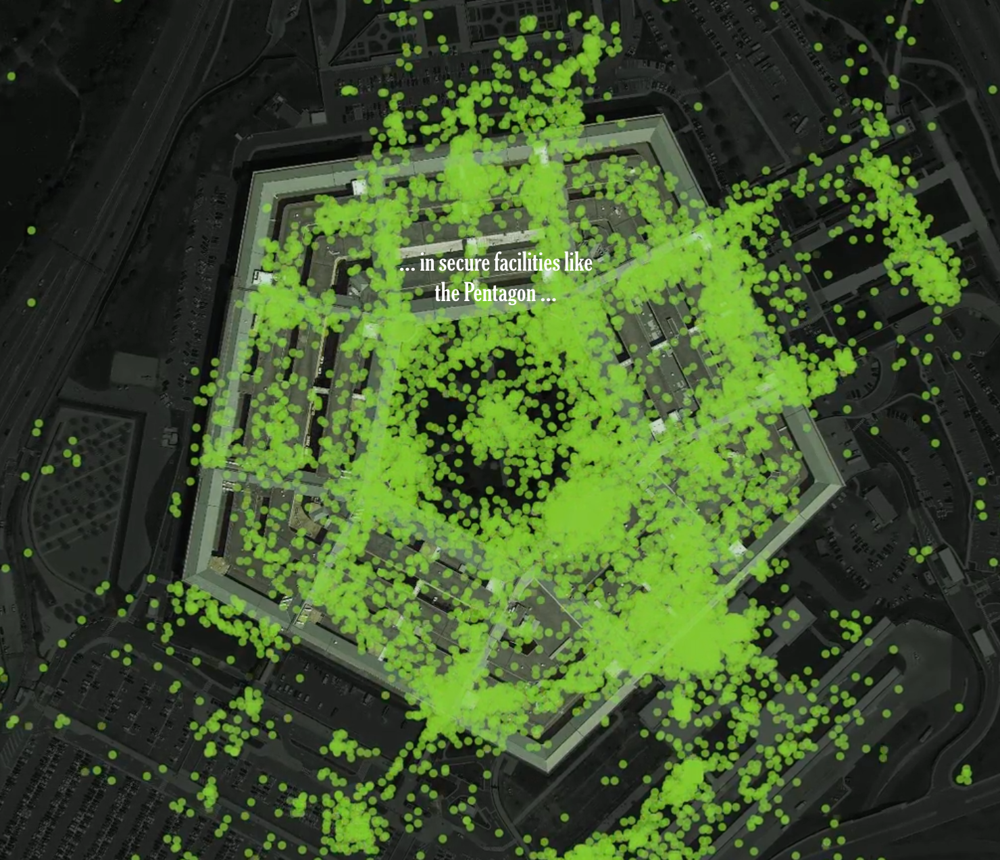

Hvorfor geografiske data og visualisering?
Hvorfor geografisk data og visualisering?
Nesten alt vi gjør og måler skjer et sted. Når data har en posisjon, kan vi se mønstre, sammenhenger og avvik som er nesten usynlige i tabeller og regneark. Kartvisualisering gjør data tilgjengelig for visuell, og umiddelbar analyse. Derfor er geografisk data og visualisering et godt utgangspunkt for å forstå både hva dataene sier og hva de kan avsløre.

Innhold
Fire eksempler viser hvordan kartvisualisering gjør data tilgjengelig, gir rask innsikt, og noen ganger avslører mer enn forventet.
1. Data vs. kartvisualisering
Ett og samme datasett med 59 punkter, vist som tabell og som kart. I tabellen er koordinatene bare tekst og tall, og det er nesten umulig å se hva dataene forestiller. Snu kortet, og mønsteret er åpenbart. Poenget er at ingenting i dataene er endret, bare representasjonen.
Åpne demoen: Tabell eller kart?
2. New York Times: The Privacy Project
Journalistene fikk tak i en datafil med over 50 milliarder posisjonsmålinger fra mer enn 12 millioner amerikanske mobiltelefoner. Dataene er «anonyme», men når de vises som bevegelige prikker på kart, er det enkelt å knytte bevegelsesmønstre til enkeltpersoner. Eksempelet viser at presis posisjon er sensitiv informasjon, og at kart gjør dette tydelig.
Les artikkelen: Twelve Million Phones, One Dataset, Zero Privacy (NYTimes, kan kreve abonnement)
3. Strava og militærbaser
Strava publiserte et globalt «heatmap» over brukernes løpe- og sykkelruter. I områder der få bruker appen, som Syria og Afghanistan, lyste utenlandske militærbaser opp, og man kunne se aktivitet og ruter inne på basene. Dataene var aggregerte og anonymiserte, men visualiseringen avslørte likevel sensitiv informasjon.
4. AIS-data: fiskebåt som slår av AIS
AIS er sendere som skip bruker til å melde fra om posisjon, fart og kurs. Animasjonen viser signalene som er mottatt time for time, og hvor signalet forsvinner. Når en fiskebåt slår av AIS, vises det som et hull i sporet. Hva gjorde fiskebåten når AIS var avslått? Fraværet av data forteller også noe, men først når dataene vises i tid og rom.

Aktivitet og refleksjon
- Hvilke data er relevant i din virksomhet for visualisering?
- Spill av AIS-animasjonen og noter når og hvor signalet forsvinner. Hva kan årsaken være?
- Les saken om Strava og diskuter: Hvem eier dataene, hvem kan se dem, og hvem har ansvaret når en visualisering avslører mer enn tiltenkt?

Litteratur
- Rød, J. K. (2023): GIS – Verktøy for å forstå verden, 2. utgave, Fagbokforlaget
- Kapittel 2.1
- Kapittel 3
- Kapittel 4
- Kapittel 7.1 og 7.2
- Kapittel 16
- Kapittel 1